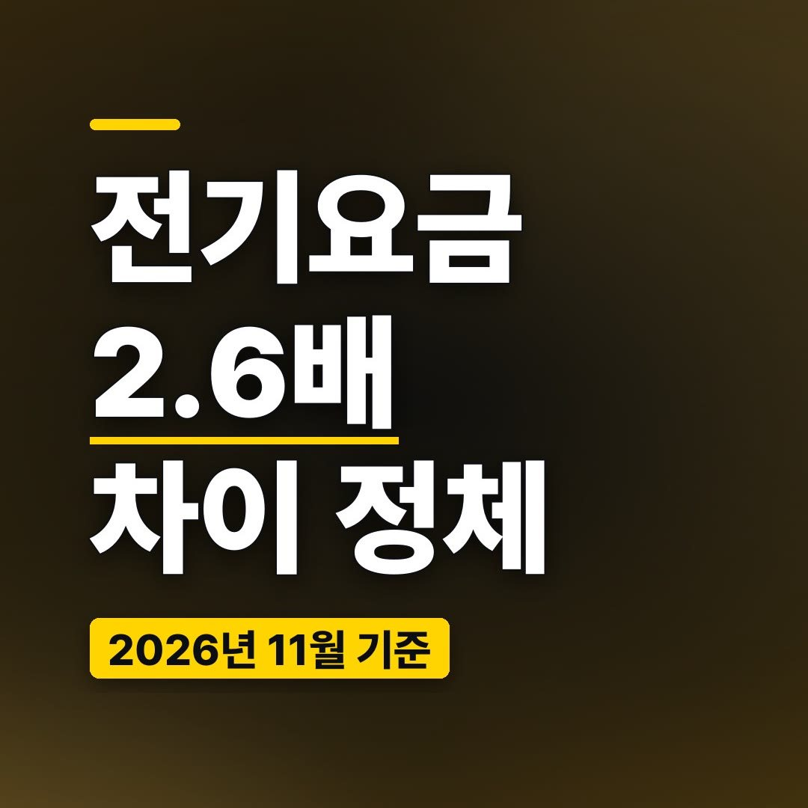
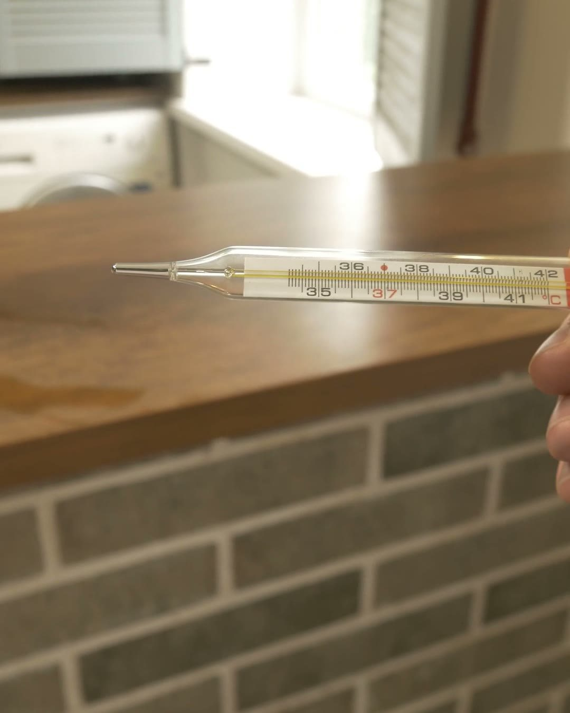
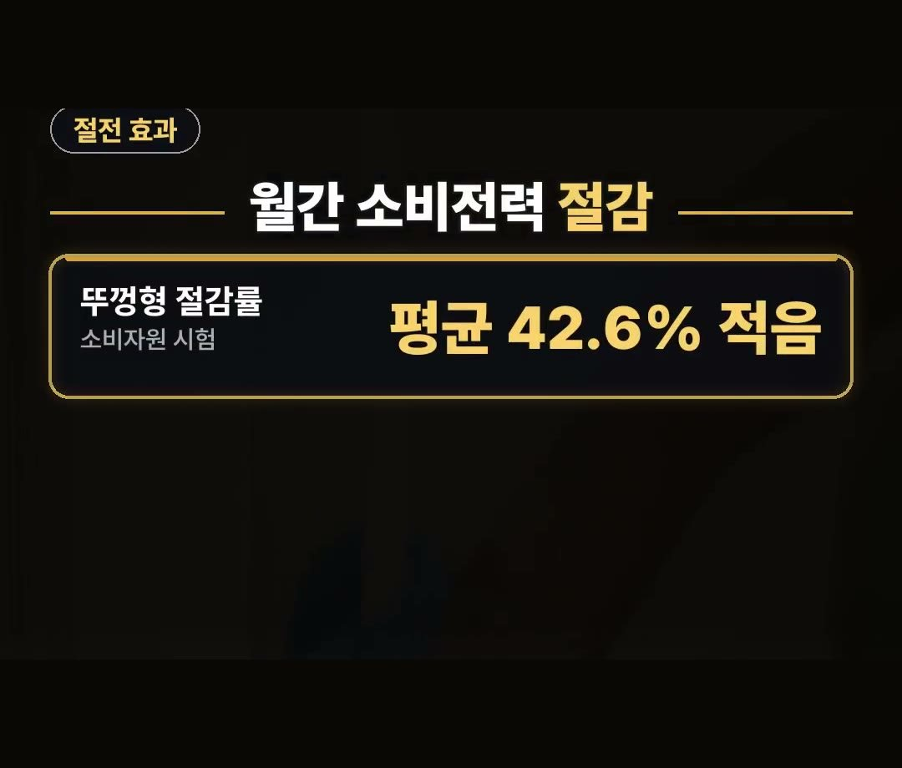
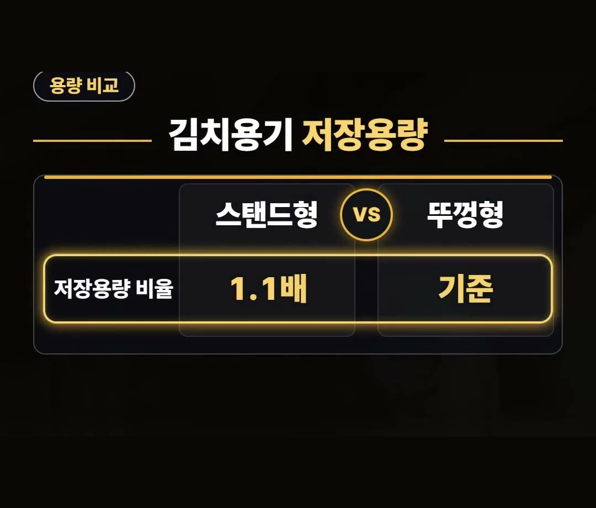
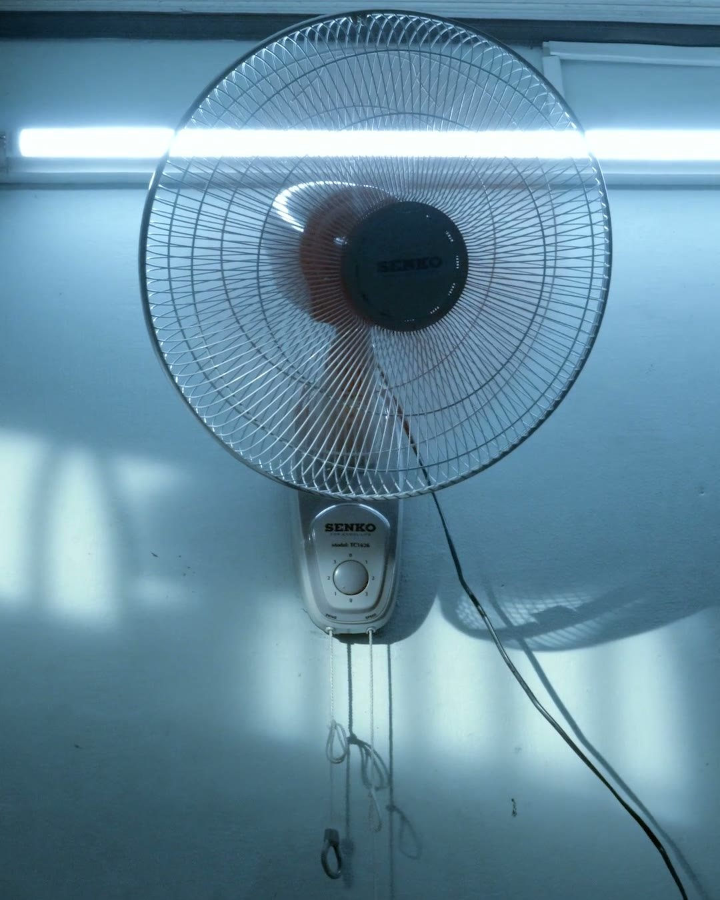

김치냉장고 추천, 고를 때 볼 3가지 기준과 전기요금 숫자
※ 이 글에는 제휴 링크가 포함되어 있으며, 링크를 통해 구매하시면 일정 수수료를 받을 수 있습니다. (가격은 같습니다)
※ 이 포스팅은 쿠팡 파트너스 활동의 일환으로, 이에 따른 일정액의 수수료를 제공받습니다.
주위 온도가 16도에서 32도로 오르면 김치냉장고 전기요금이 평균 2.6배 늘어나요.
같은 김치냉장고라도 어떤 유형을 고르고 어디에 두느냐에 따라 전기요금 차이가 크게 날 수 있습니다.
이 글에서는 김치냉장고 추천 정보를 찾는 분들이 고를 때 볼 기준 3가지(유형별 숫자, 벽과의 간격, 놓는 장소)를 차분히 정리했어요.
돈 아끼는 연구소의 아낌 소장이에요.
주위 온도가 16도에서 32도로 오르면 전기요금이 평균 2.6배 늘고, 한국소비자원 시험에서 뚜껑형은 월간 소비전력이 평균 42.6% 적었다는 점을 정리해 봤어요.
벽과는 10센티미터 이상 띄우는 것도 기억하세요! 😊
김치냉장고 추천 전에 먼저 볼 숫자, 주위 온도

김치냉장고는 한 번 들이면 오래 켜 두는 가전이에요.
그래서 제품 설명서의 기능보다 전기요금이 어떻게 달라지는지가 먼저 궁금해질 수 있습니다.

이 글에서 가장 눈에 띄는 숫자는 주위 온도와 관련된 것이에요.
- 주위 온도: 16도 → 32도로 상승
- 전기요금: 평균 2.6배 증가
김치냉장고가 놓인 곳이 더워질수록 전기요금이 늘어난다는 뜻이에요.
그러니 김치냉장고 추천 기준을 볼 때는 제품만이 아니라 놓을 자리도 같이 살펴보는 편이 좋아요.
고를 때 볼 기준 3가지는 아래와 같이 정리했습니다.
- 첫째: 유형별 소비전력과 김치용기 저장용량
- 둘째: 벽과의 간격(설치 위치)
- 셋째: 놓는 장소
첫째 기준, 유형에 따라 다른 월간 소비전력

한국소비자원 시험 결과를 보면, 뚜껑형은 월간 소비전력이 평균 42.6% 적게 나왔어요.
- 시험 기관: 한국소비자원
- 뚜껑형 월간 소비전력: 평균 42.6% 적음
다만 이 숫자는 소비전력을 기준으로 한 것이에요.
요금 금액으로 바꾼 값은 이 글에 담지 않았습니다.
유형을 고를 때 소비전력이 얼마나 차이 나는지 하나의 기준으로 삼아 볼 수 있다는 정도로 봐 주세요.
김치냉장고가격비교 할 때 같이 볼 김치용기 저장용량

뚜껑형의 소비전력 숫자만 보고 마음을 정하면 용량을 놓칠 수 있어요.
김치용기 저장용량은 스탠드형이 뚜껑형의 1.1배예요.
실제로 담을 수 있는 김치 용량에 차이가 있다는 뜻이죠.
- 스탠드형: 김치용기 저장용량 1.1배
- 뚜껑형: 기준
이 글에는 가격 정보를 담지 않았어요.
김치냉장고가격비교를 하실 때는 가격표 옆에 유형별 소비전력과 저장용량 숫자를 나란히 적어 두면 비교하기 편할 거예요.
둘째 기준, 벽과 10센티미터 이상 띄우기
두 번째는 올바른 설치 위치예요.
김치냉장고는 벽과 10센티미터 이상 띄워야 절전된다고 합니다.
설치할 때 확인할 점을 목록으로 적어 볼게요.
- 벽과 10센티미터 이상 거리
- 절전을 위한 설치 간격
좁은 공간에 맞춰 벽에 바짝 붙여 놓기 쉬운데, 놓기 전에 줄자로 간격을 한 번 재 보시면 좋아요.
셋째 기준, 통풍 잘되고 선선한 곳에 두기

세 번째는 놓는 장소예요.
통풍이 잘되고 선선한 곳에 두는 것이 좋습니다.
앞에서 본 숫자와 이어서 생각하면 이유가 보여요.
주위 온도가 16도에서 32도로 오르면 전기요금이 평균 2.6배 늘어나니까요.
김치냉장고 추천 제품을 골랐더라도 햇빛이 오래 드는 곳이나 답답한 구석에 두면 이 숫자와 거리가 멀어질 수 있어요.
들여놓기 전에 집 안에서 선선하고 바람이 통하는 자리를 먼저 찾아보세요.
정리
- 주위 온도가 16도에서 32도로 오르면 전기요금이 평균 2.6배 늘어요.
- 한국소비자원 시험에서 뚜껑형은 월간 소비전력이 평균 42.6% 적었고, 김치용기 저장용량은 스탠드형이 뚜껑형의 1.1배예요.
- 벽과 10센티미터 이상 띄우고, 통풍 잘되고 선선한 곳에 두세요.
김치냉장고 추천 기준을 이 3가지로 먼저 살펴보시면 도움이 될 거예요.
링크는 아래에 모아 두었어요.
📌 2026년 11월 기준 정보예요. 가격은 시기에 따라 달라질 수 있어요.
· korea.kr
사진·영상사진·영상: Pexels (Liliana Drew, MART PRODUCTION, Phát Trương, Sarah Chai, osman battal, utopia 36)